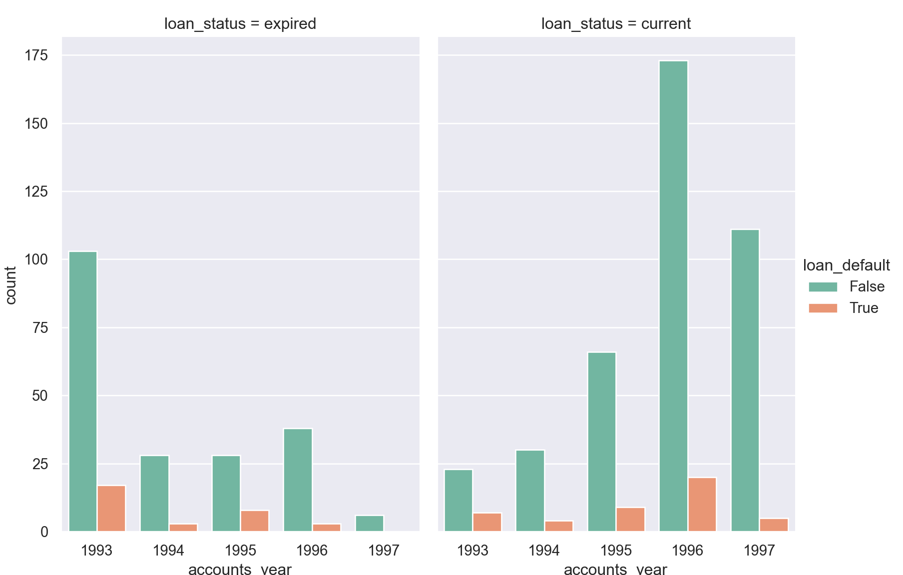

transactions = read.csv('./data/transactions.csv')
accounts = read.csv('./data/accounts_analytical.csv')Parse the date firstly
# loan packages to parse the datetime firstly
library(lubridate)##
## Attaching package: 'lubridate'## The following objects are masked from 'package:igraph':
##
## %--%, union## The following objects are masked from 'package:base':
##
## date, intersect, setdiff, unionaccounts['accounts_year'] = year(accounts$acct_creation_date)
accounts['accounts_day'] = day(accounts$acct_creation_date)
accounts['accounts_weekend'] <- accounts$day %in% c("Sat", "Sun")
accounts['month'] <- month(accounts$acct_creation_date)
accounts['accounts_holiday'] <- with(accounts,ifelse(
month >= 2 & month <= 5, 'Spring', ifelse(
month >= 6 & month <= 8, 'Summer', ifelse(
month >= 9 & month <= 11,'Autumn', 'Winter')
)
)
)
# filter the dataset
accounts$loan_date[grepl("^ *$",accounts$loan_date)] <- NA
accounts['loan_year'] = year(accounts$loan_date)
accounts['loan_day'] = day(accounts$loan_date)
accounts['loan_weekend'] <- accounts$day %in% c("Sat", "Sun")
accounts['month'] <- month(accounts$loan_date)
accounts['loan_holiday'] <- with(accounts,ifelse(
month >= 2 & month <= 5, 'Spring', ifelse(
month >= 6 & month <= 8, 'Summer', ifelse(
month >= 9 & month <= 11,'Autumn', 'Winter')
)
)
)# to count the accounts in each year
library("viridis")## Loading required package: viridisLiteggplot(data=accounts,aes(accounts_year)) +
geom_bar(stat='count',color='tan3',fill='slateblue1') +
ggtitle('The count of accounts created in each year')# to plot two barcharts of loan_status in each year
par(mfrow=c(1,2))
year_loan_status_counts = accounts %>% group_by(accounts_year,loan_status) %>% count()
year_loan_status_counts$loan_status = sub("^$", "Unknown", year_loan_status_counts$loan_status)
ggplot() +
geom_bar(data=year_loan_status_counts,aes(fill=loan_status,x=accounts_year,y=n),stat='identity',
position = position_dodge(width = 0.8), binwidth = 25) +
labs(x = "Year") +
ggtitle('The Loan Status under different year')## Warning: Ignoring unknown parameters: binwidthyear_loan_default_counts = accounts %>% group_by(accounts_year,loan_default) %>% count()
year_loan_default_counts$loan_default[is.na(year_loan_default_counts$loan_default)] <- 'Unknown'
ggplot() +
geom_bar(data=year_loan_default_counts,aes(fill=loan_default,x=accounts_year,y=n),stat='identity',
position = position_dodge(width = 0.8), binwidth = 25) +
labs(x = "Year") +
ggtitle('The Loan Default in different seasons')## Warning: Ignoring unknown parameters: binwidth# to plot two barcharts of loan status by loan open date
par(mfrow=c(1,2))
year_loan_status_counts = accounts %>% group_by(loan_year,loan_status) %>% count()
year_loan_status_counts$loan_status = sub("^$", "Unknown", year_loan_status_counts$loan_status)
ggplot() +
geom_bar(data=year_loan_status_counts,aes(fill=loan_status,x=loan_year,y=n),stat='identity',
position = position_dodge(width = 0.8), binwidth = 25) +
scale_y_continuous(limits=c(0,800)) +
labs(x = "Year") +
ggtitle('The Loan Status under different year')## Warning: Ignoring unknown parameters: binwidth## Warning: Removed 1 rows containing missing values (geom_bar).year_loan_default_counts = accounts %>% group_by(loan_year,loan_default) %>% count()
year_loan_default_counts$loan_default[is.na(year_loan_default_counts$loan_default)] <- 'Unknown'
ggplot() +
geom_bar(data=year_loan_default_counts,aes(fill=loan_default,x=loan_year,y=n),stat='identity',
position = position_dodge(width = 0.8), binwidth = 25) +
scale_y_continuous(limits=c(0,800)) +
labs(x = "Year") +
ggtitle('The Loan Default in different year')## Warning: Ignoring unknown parameters: binwidth
## Warning: Removed 1 rows containing missing values (geom_bar).The status and default of loan is not related with the account created date.
The status of loan is related with loan created date, because when the time passed, the loan will be more possible not to be default, expecially for current loan.
to begin with, let me find whether there is any similarity within default loan accounts
#accounts %>% filter(loan_default=='TRUE') %>% head(5)The accounts that have default loan all have negative min_balance.
#accounts %>% filter(min_balance <= 0)# to plot the pie chart of percentage of higher risk accounts
library(scales)##
## Attaching package: 'scales'## The following object is masked from 'package:viridis':
##
## viridis_pal## The following object is masked from 'package:purrr':
##
## discard## The following object is masked from 'package:readr':
##
## col_factorhigher_risk = accounts %>% filter(min_balance <= 0)
higher_risk$loan_default[is.na(higher_risk$loan_default)] <- 'Unknown'
higher_risk = higher_risk %>%
group_by(loan_default) %>%
summarise(counts = n()) %>%
mutate(percentages = round(counts/sum(counts)*100,2))## `summarise()` ungrouping output (override with `.groups` argument)ggplot(data=higher_risk,aes(x=factor(1),y=counts,fill=loan_default)) +
geom_col(aes(fill = loan_default), width = 1) +
geom_text(aes(label = percentages), position = position_stack(vjust = 0.5)) +
coord_polar("y") + ggtitle('The distribution of higher default loan risk accounts')So in the pie chart above, the accounts all are higher risk default loan.
Follow the same rule, we try to find the accounts with Top 10% min_balance
n = 15
Top_10_min_balance = subset(accounts, min_balance > quantile(min_balance, prob = 1 - n/100))
ggplot(data=Top_10_min_balance,aes(loan_default)) +
geom_bar(stat='count')None of them have default loan.
I think min_balance is importance factor to determine whether account is under higher risk of default loan.
# loan packages
import pandas as pd
import matplotlib.pyplot as plt
import seaborn as sns
import datetime as dttransactions = pd.read_csv('./data/transactions.csv')## sys:1: DtypeWarning: Columns (6) have mixed types.Specify dtype option on import or set low_memory=False.accounts = pd.read_csv('./data/accounts_analytical.csv')Parse the date firstly
accounts['accounts_year'] = pd.to_datetime(accounts.acct_creation_date).dt.year
accounts['loan_year'] = pd.to_datetime(accounts.loan_date).dt.year# to plot countplot of loan_default under each year
ax = sns.countplot(x='accounts_year',hue='loan_default',data=accounts)
ax.set_title('The count plot of loan_default from 1993 to 1997')ax = sns.catplot(x = 'accounts_year',hue='loan_default',col='loan_status',
data = accounts, kind = 'count',
height = 6, aspect = .7,palette='Set2')
plt.show()

For loan_status = expired account, the loan default is being less when the accounts_year higher.
# plot barchart for loan_default
ax = sns.catplot(x = 'loan_year',hue='loan_default',col='loan_status',
data = accounts, kind = 'count',
height = 6, aspect = .7,palette='Set1')
plt.show()The loan default is more related with the loan created date.
especially for loan_status = current, when time passes by, account will be less likely to be default loan.
lower_risk = accounts.nlargest(100,'min_balance')['loan_default']
lower_risk.fillna('Unknown',inplace=True)
lower_risk.value_counts().plot.pie(autopct='%1.0f%%')
plt.title('Pie Chart for the count of loan_default in accounts that have top 100 highest min_balance')# find the percentage of higher risl
higher_risk = accounts[accounts['min_balance'] < 0]
higher_risk['loan_default'].fillna('Unknown',inplace=True)## /Users/xuguiming/Library/r-miniconda/envs/r-reticulate/lib/python3.6/site-packages/pandas/core/series.py:4523: SettingWithCopyWarning:
## A value is trying to be set on a copy of a slice from a DataFrame
##
## See the caveats in the documentation: https://pandas.pydata.org/pandas-docs/stable/user_guide/indexing.html#returning-a-view-versus-a-copy
## downcast=downcast,higher_risk['loan_default'].value_counts().plot.pie(colors=['c','b'],shadow=True,explode=(0.1,0),autopct='%1.0f%%')## Conclusion:
same as R version, I think min_balance is importance factor to determine whether account is under higher risk of default loan. Higher min_balance will have lower default loan risk.